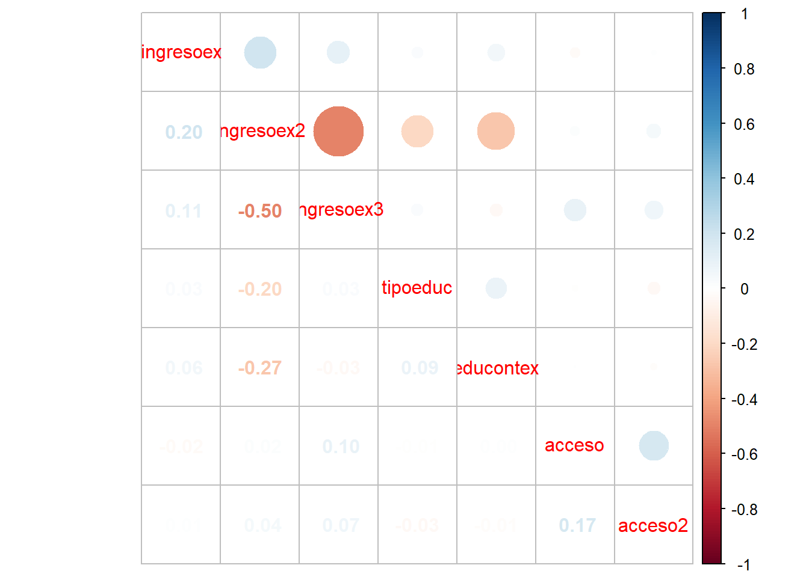

pacman::p_load(dplyr, sjmisc, car, sjlabelled, stargazer, haven, sjPlot, ggplot2, psych, kableExtra)
rm(list=ls())
options(scipen=999)
load(url("https://github.com/justicia-distributiva/merit-edjust/raw/main/input/data-original/casen2022.RData"))
proc_daca <- casen22 %>% select( ingresoex= y3ap, ingresoex2= y3fp, ingresoex3=y3cp,tipoeduc =e8, educontex= e5a, acceso=v24, acceso2=v35b)
frq(proc_daca)y3ap. ¿Con qué frecuencia recibe ingresos por horas extras? (ingresoex) <numeric>
# total N=202231 valid N=5582 mean=-4.21 sd=21.97
Value | Label | N | Raw % | Valid % | Cum. %
--------------------------------------------------------------------------------
-99 | No responde | 24 | 0.01 | 0.43 | 0.43
-88 | No sabe | 328 | 0.16 | 5.88 | 6.31
1 | 1. Cada mes (mensual) | 3979 | 1.97 | 71.28 | 77.59
2 | 2. Cada dos meses (bimestral) | 633 | 0.31 | 11.34 | 88.93
3 | 3. Cada tres meses (trimestral) | 319 | 0.16 | 5.71 | 94.64
4 | 4. Cada cuatro meses (cuatrimestral) | 88 | 0.04 | 1.58 | 96.22
5 | 5. Cada seis meses (semestral) | 90 | 0.04 | 1.61 | 97.83
6 | 6. Una vez por año (anual) | 121 | 0.06 | 2.17 | 100.00
<NA> | <NA> | 196649 | 97.24 | <NA> | <NA>
y3fp. ¿Con qué frecuencia recibe ingresos por otros ingresos? (ingresoex2) <numeric>
# total N=202231 valid N=298 mean=-5.65 sd=25.29
Value | Label | N | Raw % | Valid % | Cum. %
--------------------------------------------------------------------------------
-99 | No responde | 2 | 0.00 | 0.67 | 0.67
-88 | No sabe | 23 | 0.01 | 7.72 | 8.39
1 | 1. Cada mes (mensual) | 178 | 0.09 | 59.73 | 68.12
2 | 2. Cada dos meses (bimestral) | 12 | 0.01 | 4.03 | 72.15
3 | 3. Cada tres meses (trimestral) | 50 | 0.02 | 16.78 | 88.93
4 | 4. Cada cuatro meses (cuatrimestral) | 4 | 0.00 | 1.34 | 90.27
5 | 5. Cada seis meses (semestral) | 4 | 0.00 | 1.34 | 91.61
6 | 6. Una vez por año (anual) | 25 | 0.01 | 8.39 | 100.00
<NA> | <NA> | 201933 | 99.85 | <NA> | <NA>
y3cp. ¿Con qué frecuencia recibe ingresos por propinas? (ingresoex3) <numeric>
# total N=202231 valid N=928 mean=-3.23 sd=19.21
Value | Label | N | Raw % | Valid % | Cum. %
--------------------------------------------------------------------------------
-99 | No responde | 1 | 0.00 | 0.11 | 0.11
-88 | No sabe | 44 | 0.02 | 4.74 | 4.85
1 | 1. Cada mes (mensual) | 834 | 0.41 | 89.87 | 94.72
2 | 2. Cada dos meses (bimestral) | 32 | 0.02 | 3.45 | 98.17
3 | 3. Cada tres meses (trimestral) | 9 | 0.00 | 0.97 | 99.14
4 | 4. Cada cuatro meses (cuatrimestral) | 2 | 0.00 | 0.22 | 99.35
5 | 5. Cada seis meses (semestral) | 0 | 0.00 | 0.00 | 99.35
6 | 6. Una vez por año (anual) | 6 | 0.00 | 0.65 | 100.00
<NA> | <NA> | 201303 | 99.54 | <NA> | <NA>
e8. ¿En qué tipo de institución realizó su educación superior? (tipoeduc) <numeric>
# total N=202231 valid N=37369 mean=2.29 sd=10.10
Value | Label | N | Raw % | Valid % | Cum. %
-----------------------------------------------------------------------------------------------------------------------
-99 | No responde | 18 | 0.01 | 0.05 | 0.05
-88 | No sabe | 427 | 0.21 | 1.14 | 1.19
1 | 1. Centro de Formación Técnica | 4555 | 2.25 | 12.19 | 13.38
2 | 2. Instituto Profesional | 10308 | 5.10 | 27.58 | 40.96
3 | 3. Universidad privada no perteneciente al Consejo de Rectores (CRUCH) | 4824 | 2.39 | 12.91 | 53.87
4 | 4. Universidad privada perteneciente al Consejo de Rectores (CRUCH) | 5730 | 2.83 | 15.33 | 69.21
5 | 5. Universidad Estatal | 8766 | 4.33 | 23.46 | 92.67
6 | 6. Establecimiento de educación superior de las Fuerzas Armadas y del Orden | 535 | 0.26 | 1.43 | 94.10
7 | 7. Universidad Extranjera | 2206 | 1.09 | 5.90 | 100.00
<NA> | <NA> | 164862 | 81.52 | <NA> | <NA>
e5a. ¿Cuál es la principal razón por la cual no asiste actualmente a educación? (educontex) <numeric>
# total N=202231 valid N=11695 mean=8.19 sd=10.07
Value | Label | N | Raw % | Valid % | Cum. %
---------------------------------------------------------------------------------------------------------------------------------------------------------------------------------
-99 | No responde | 31 | 0.02 | 0.27 | 0.27
-88 | No sabe | 75 | 0.04 | 0.64 | 0.91
1 | 1. Ayuda en la casa o quehaceres del hogar | 299 | 0.15 | 2.56 | 3.46
2 | 2. Ayuda o se dedica al cuidado de alguien | 244 | 0.12 | 2.09 | 5.55
3 | 3. Embarazo, maternidad o paternidad | 513 | 0.25 | 4.39 | 9.94
4 | 4. Tiene una discapacidad o requiere establecimiento de educación especial | 114 | 0.06 | 0.97 | 10.91
5 | 5. Tiene una enfermedad o condición de salud que lo(a) inhabilita | 271 | 0.13 | 2.32 | 13.23
6 | 6. Problemas familiares | 211 | 0.10 | 1.80 | 15.03
7 | 7. No le interesa o no conoce la manera para completar sus estudios | 318 | 0.16 | 2.72 | 17.75
8 | 8. Terminó de estudiar | 4513 | 2.23 | 38.59 | 56.34
9 | 9. Está asistiendo a un preuniversitario | 245 | 0.12 | 2.09 | 58.44
10 | 10. Se encuentra preparando la Prueba de Acceso a la Educación Superior (PAES) o Prueba de Transición (PDT) de Invierno por su cuenta | 250 | 0.12 | 2.14 | 60.57
11 | 11. Dificultad económica | 834 | 0.41 | 7.13 | 67.70
12 | 12. Trabaja o busca trabajo | 3048 | 1.51 | 26.06 | 93.77
13 | 13. Problemas de rendimiento o cancelación de matrícula | 85 | 0.04 | 0.73 | 94.49
14 | 14. Dificultad de acceso o movilización | 38 | 0.02 | 0.32 | 94.82
15 | 15. Por la pandemia COVID-19 | 118 | 0.06 | 1.01 | 95.83
16 | 16. Otra razón. Especifique | 488 | 0.24 | 4.17 | 100.00
<NA> | <NA> | 190536 | 94.22 | <NA> | <NA>
v24. La vivienda donde usted vive, ¿dispone de energía eléctrica? (acceso) <numeric>
# total N=202231 valid N=202231 mean=1.14 sd=0.69
Value | Label | N | Raw % | Valid % | Cum. %
-----------------------------------------------------------------------------------------------------------------------
1 | 1. Sí, de la red pública con medidor propio | 187189 | 92.56 | 92.56 | 92.56
2 | 2. Sí, de la red pública con medidor compartido | 10599 | 5.24 | 5.24 | 97.80
3 | 3. Sí, de la red pública sin medidor | 1976 | 0.98 | 0.98 | 98.78
4 | 4. Sí, de la red pública y un generador propio | 132 | 0.07 | 0.07 | 98.85
5 | 5. Sí, de la red pública y un generador comunitario (solar, eólico o fósil) | 193 | 0.10 | 0.10 | 98.94
6 | 6. Sí, solo un generador propio (solar, eólico o fósil) | 1064 | 0.53 | 0.53 | 99.47
7 | 7. Sí, solo un generador comunitario (solar, eólico o fósil) | 197 | 0.10 | 0.10 | 99.56
8 | 8. No dispone de energía eléctrica | 881 | 0.44 | 0.44 | 100.00
<NA> | <NA> | 0 | 0.00 | <NA> | <NA>
v35b. Vivienda a menos de 20 cuadras o 2,5 Km de un centro educacional (acceso2) <numeric>
# total N=202231 valid N=202231 mean=0.88 sd=4.68
Value | Label | N | Raw % | Valid % | Cum. %
---------------------------------------------------
-88 | No Sabe | 556 | 0.27 | 0.27 | 0.27
1 | 1. Sí | 175593 | 86.83 | 86.83 | 87.10
2 | 2. No | 26082 | 12.90 | 12.90 | 100.00
<NA> | <NA> | 0 | 0.00 | <NA> | <NA>proc_daca <- proc_daca %>% set_na(., na = c(-99, -88))
frq(proc_daca)y3ap. ¿Con qué frecuencia recibe ingresos por horas extras? (ingresoex) <numeric>
# total N=202231 valid N=5230 mean=1.48 sd=1.07
Value | Label | N | Raw % | Valid % | Cum. %
--------------------------------------------------------------------------------
1 | 1. Cada mes (mensual) | 3979 | 1.97 | 76.08 | 76.08
2 | 2. Cada dos meses (bimestral) | 633 | 0.31 | 12.10 | 88.18
3 | 3. Cada tres meses (trimestral) | 319 | 0.16 | 6.10 | 94.28
4 | 4. Cada cuatro meses (cuatrimestral) | 88 | 0.04 | 1.68 | 95.97
5 | 5. Cada seis meses (semestral) | 90 | 0.04 | 1.72 | 97.69
6 | 6. Una vez por año (anual) | 121 | 0.06 | 2.31 | 100.00
<NA> | <NA> | 197001 | 97.41 | <NA> | <NA>
y3fp. ¿Con qué frecuencia recibe ingresos por otros ingresos? (ingresoex2) <numeric>
# total N=202231 valid N=273 mean=1.97 sd=1.58
Value | Label | N | Raw % | Valid % | Cum. %
--------------------------------------------------------------------------------
1 | 1. Cada mes (mensual) | 178 | 0.09 | 65.20 | 65.20
2 | 2. Cada dos meses (bimestral) | 12 | 0.01 | 4.40 | 69.60
3 | 3. Cada tres meses (trimestral) | 50 | 0.02 | 18.32 | 87.91
4 | 4. Cada cuatro meses (cuatrimestral) | 4 | 0.00 | 1.47 | 89.38
5 | 5. Cada seis meses (semestral) | 4 | 0.00 | 1.47 | 90.84
6 | 6. Una vez por año (anual) | 25 | 0.01 | 9.16 | 100.00
<NA> | <NA> | 201958 | 99.87 | <NA> | <NA>
y3cp. ¿Con qué frecuencia recibe ingresos por propinas? (ingresoex3) <numeric>
# total N=202231 valid N=883 mean=1.10 sd=0.51
Value | Label | N | Raw % | Valid % | Cum. %
--------------------------------------------------------------------------------
1 | 1. Cada mes (mensual) | 834 | 0.41 | 94.45 | 94.45
2 | 2. Cada dos meses (bimestral) | 32 | 0.02 | 3.62 | 98.07
3 | 3. Cada tres meses (trimestral) | 9 | 0.00 | 1.02 | 99.09
4 | 4. Cada cuatro meses (cuatrimestral) | 2 | 0.00 | 0.23 | 99.32
5 | 5. Cada seis meses (semestral) | 0 | 0.00 | 0.00 | 99.32
6 | 6. Una vez por año (anual) | 6 | 0.00 | 0.68 | 100.00
<NA> | <NA> | 201348 | 99.56 | <NA> | <NA>
e8. ¿En qué tipo de institución realizó su educación superior? (tipoeduc) <numeric>
# total N=202231 valid N=36924 mean=3.39 sd=1.68
Value | Label | N | Raw % | Valid % | Cum. %
-----------------------------------------------------------------------------------------------------------------------
1 | 1. Centro de Formación Técnica | 4555 | 2.25 | 12.34 | 12.34
2 | 2. Instituto Profesional | 10308 | 5.10 | 27.92 | 40.25
3 | 3. Universidad privada no perteneciente al Consejo de Rectores (CRUCH) | 4824 | 2.39 | 13.06 | 53.32
4 | 4. Universidad privada perteneciente al Consejo de Rectores (CRUCH) | 5730 | 2.83 | 15.52 | 68.84
5 | 5. Universidad Estatal | 8766 | 4.33 | 23.74 | 92.58
6 | 6. Establecimiento de educación superior de las Fuerzas Armadas y del Orden | 535 | 0.26 | 1.45 | 94.03
7 | 7. Universidad Extranjera | 2206 | 1.09 | 5.97 | 100.00
<NA> | <NA> | 165307 | 81.74 | <NA> | <NA>
e5a. ¿Cuál es la principal razón por la cual no asiste actualmente a educación? (educontex) <numeric>
# total N=202231 valid N=11589 mean=9.10 sd=3.30
Value | Label | N | Raw % | Valid % | Cum. %
---------------------------------------------------------------------------------------------------------------------------------------------------------------------------------
1 | 1. Ayuda en la casa o quehaceres del hogar | 299 | 0.15 | 2.58 | 2.58
2 | 2. Ayuda o se dedica al cuidado de alguien | 244 | 0.12 | 2.11 | 4.69
3 | 3. Embarazo, maternidad o paternidad | 513 | 0.25 | 4.43 | 9.11
4 | 4. Tiene una discapacidad o requiere establecimiento de educación especial | 114 | 0.06 | 0.98 | 10.10
5 | 5. Tiene una enfermedad o condición de salud que lo(a) inhabilita | 271 | 0.13 | 2.34 | 12.43
6 | 6. Problemas familiares | 211 | 0.10 | 1.82 | 14.25
7 | 7. No le interesa o no conoce la manera para completar sus estudios | 318 | 0.16 | 2.74 | 17.00
8 | 8. Terminó de estudiar | 4513 | 2.23 | 38.94 | 55.94
9 | 9. Está asistiendo a un preuniversitario | 245 | 0.12 | 2.11 | 58.06
10 | 10. Se encuentra preparando la Prueba de Acceso a la Educación Superior (PAES) o Prueba de Transición (PDT) de Invierno por su cuenta | 250 | 0.12 | 2.16 | 60.21
11 | 11. Dificultad económica | 834 | 0.41 | 7.20 | 67.41
12 | 12. Trabaja o busca trabajo | 3048 | 1.51 | 26.30 | 93.71
13 | 13. Problemas de rendimiento o cancelación de matrícula | 85 | 0.04 | 0.73 | 94.44
14 | 14. Dificultad de acceso o movilización | 38 | 0.02 | 0.33 | 94.77
15 | 15. Por la pandemia COVID-19 | 118 | 0.06 | 1.02 | 95.79
16 | 16. Otra razón. Especifique | 488 | 0.24 | 4.21 | 100.00
<NA> | <NA> | 190642 | 94.27 | <NA> | <NA>
v24. La vivienda donde usted vive, ¿dispone de energía eléctrica? (acceso) <numeric>
# total N=202231 valid N=202231 mean=1.14 sd=0.69
Value | Label | N | Raw % | Valid % | Cum. %
-----------------------------------------------------------------------------------------------------------------------
1 | 1. Sí, de la red pública con medidor propio | 187189 | 92.56 | 92.56 | 92.56
2 | 2. Sí, de la red pública con medidor compartido | 10599 | 5.24 | 5.24 | 97.80
3 | 3. Sí, de la red pública sin medidor | 1976 | 0.98 | 0.98 | 98.78
4 | 4. Sí, de la red pública y un generador propio | 132 | 0.07 | 0.07 | 98.85
5 | 5. Sí, de la red pública y un generador comunitario (solar, eólico o fósil) | 193 | 0.10 | 0.10 | 98.94
6 | 6. Sí, solo un generador propio (solar, eólico o fósil) | 1064 | 0.53 | 0.53 | 99.47
7 | 7. Sí, solo un generador comunitario (solar, eólico o fósil) | 197 | 0.10 | 0.10 | 99.56
8 | 8. No dispone de energía eléctrica | 881 | 0.44 | 0.44 | 100.00
<NA> | <NA> | 0 | 0.00 | <NA> | <NA>
v35b. Vivienda a menos de 20 cuadras o 2,5 Km de un centro educacional (acceso2) <numeric>
# total N=202231 valid N=201675 mean=1.13 sd=0.34
Value | Label | N | Raw % | Valid % | Cum. %
-------------------------------------------------
1 | 1. Sí | 175593 | 86.83 | 87.07 | 87.07
2 | 2. No | 26082 | 12.90 | 12.93 | 100.00
<NA> | <NA> | 556 | 0.27 | <NA> | <NA>mean(proc_daca$ingresoex);mean(proc_daca$ingresoex2);mean(proc_daca$ingresoex3);mean(proc_daca$tipoeduc);mean(proc_daca$educontex);mean(proc_daca$acceso);mean(proc_daca$acceso2)[1] NA[1] NA[1] NA[1] NA[1] NA[1] 1.140374[1] NAmean(proc_daca$ingresoex, na.rm = TRUE);mean(proc_daca$ingresoex2, na.rm = TRUE);mean(proc_daca$ingresoex3, na.rm = TRUE);mean(proc_daca$tipoeduc, na.rm = TRUE);mean(proc_daca$educontex, na.rm = TRUE);mean(proc_daca$acceso, na.rm = TRUE);mean(proc_daca$acceso2, na.rm = TRUE)[1] 1.478011[1] 1.970696[1] 1.097395[1] 3.386551[1] 9.09509[1] 1.140374[1] 1.129327Mk <- cor(proc_daca, use = "pairwise.complete.obs")
Mk ingresoex ingresoex2 ingresoex3 tipoeduc educontex
ingresoex 1.000000000 0.19992457 0.10608023 0.025388297 0.059736263
ingresoex2 0.199924571 1.00000000 -0.50000000 -0.204917288 -0.274078831
ingresoex3 0.106080234 -0.50000000 1.00000000 0.028712846 -0.032570435
tipoeduc 0.025388297 -0.20491729 0.02871285 1.000000000 0.089627215
educontex 0.059736263 -0.27407883 -0.03257044 0.089627215 1.000000000
acceso -0.022036579 0.01844961 0.09976311 -0.008511965 0.001015098
acceso2 0.005931103 0.04045920 0.06797834 -0.033037914 -0.010786338
acceso acceso2
ingresoex -0.022036579 0.005931103
ingresoex2 0.018449615 0.040459197
ingresoex3 0.099763110 0.067978335
tipoeduc -0.008511965 -0.033037914
educontex 0.001015098 -0.010786338
acceso 1.000000000 0.174054647
acceso2 0.174054647 1.000000000sjPlot::tab_corr(proc_daca, na.deletion = "pairwise", triangle = "lower")| y3ap. ¿Con qué frecuencia recibe ingresos por horas extras? |
y3fp. ¿Con qué frecuencia recibe ingresos por otros ingresos? |
y3cp. ¿Con qué frecuencia recibe ingresos por propinas? |
e8. ¿En qué tipo de institución realizó su educación superior? |
e5a. ¿Cuál es la principal razón por la cual no asiste actualmente a educación? |
v24. La vivienda donde usted vive, ¿dispone de energía eléctrica? |
v35b. Vivienda a menos de 20 cuadras o 2,5 Km de un centro educacional |
|
| y3ap. ¿Con qué frecuencia recibe ingresos por horas extras? |
|||||||
| y3fp. ¿Con qué frecuencia recibe ingresos por otros ingresos? |
0.200 | ||||||
| y3cp. ¿Con qué frecuencia recibe ingresos por propinas? |
0.106 | -0.500 | |||||
| e8. ¿En qué tipo de institución realizó su educación superior? |
0.025 | -0.205* | 0.029 | ||||
| e5a. ¿Cuál es la principal razón por la cual no asiste actualmente a educación? |
0.060 | -0.274 | -0.033 | 0.090*** | |||
| v24. La vivienda donde usted vive, ¿dispone de energía eléctrica? |
-0.022 | 0.018 | 0.100** | -0.009 | 0.001 | ||
| v35b. Vivienda a menos de 20 cuadras o 2,5 Km de un centro educacional |
0.006 | 0.040 | 0.068* | -0.033*** | -0.011 | 0.174*** | |
| Computed correlation used pearson-method with pairwise-deletion. | |||||||
pacman::p_load(corrplot)
corrplot.mixed(Mk)